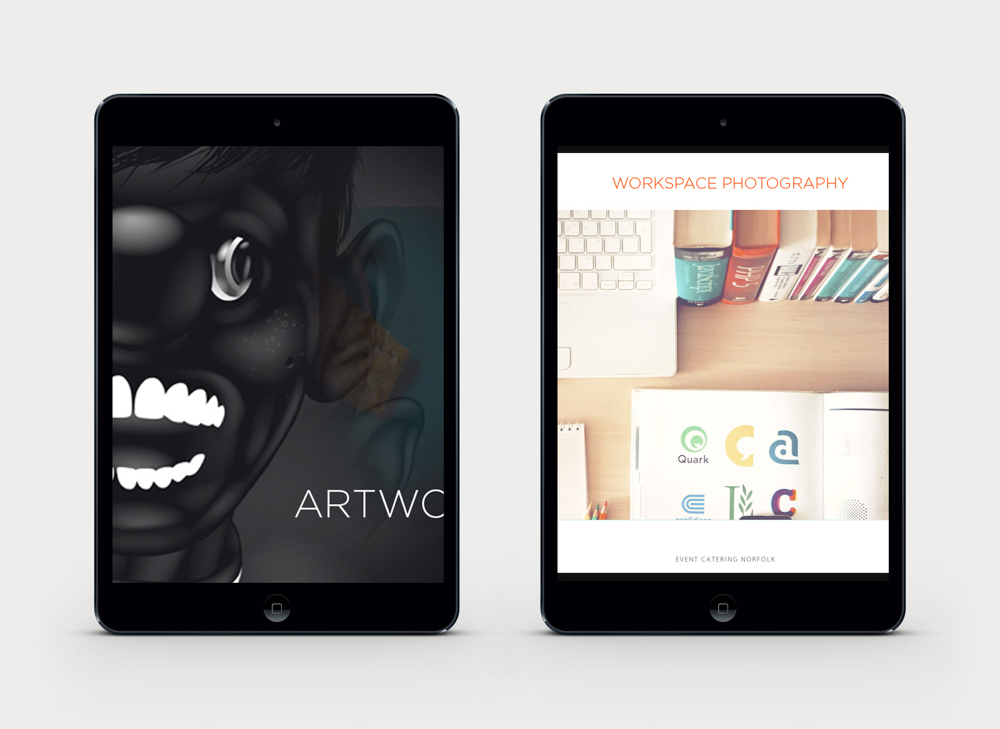

Localization at Riot Games
A Brief Overview
What is Localization?
Myth: Localization = Translation.
Truth: Localization is NOT just translation.
The translation of words is definitely a part of localization, but it is just one of many that make up the entire process. This is the dictionary definition:
localization(n) noun / US / ləʊkəlɪˈzeɪʃən :
The practice of adjusting a product's functional properties and characteristics to accommodate the language, cultural, political and legal differences of a foreign market or country.
Why should I care?
Rioters live by a code, the manifesto:
Fact: There are currently over 65 million League of Legends players worldwide.
Reality Check: Only 3% live in the US. That means that over 97% of our players live all over the world, speaking over 22 different languages. Collectively, League of Legends unites over 65 million players, speaking over 22 different languages,from so many diverse cultural, political, and legal realities.
Back to the Manifesto:
Localization matters to you because you are a Rioter, and most of our players are in regions all over the world. So, what does it mean to be the most player focused gaming company in the world? It means you care about localization and you want to learn more about it so you can do it right. We are crafting a product that must feel organic to the region it is being distributed in. That means, when we have a new release, lets say of a champion. We have done everything to make sure that not only are all the words translated in the way that people actually speak, but that the content of the material is in line with our player. Rioters are not here to make any huge political statements with the products we create. Rioters do not set out to shock and awe any player by releasing content that is culturally taboo. That's not how Riot does it, nor will we ever. Quality is what our players rely on, and thats what localization is about. Riot localization is the ultimate quality control for players worldwide. When we localize a product, we are making sure it's got Riot's stamp of approval to go and be played by players around the world. . Rioters may do things outside the box of corporate norms, but that does not mean that we blatantly disregard the laws and ways of other countries. cultural, political, and legal parts of localization is where the Rioter
Services
Identity, E-commerce Website Design & Development

- 